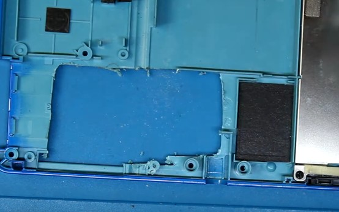
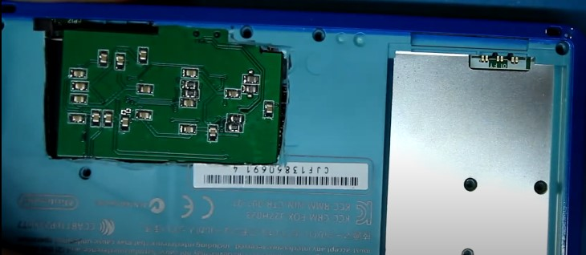

Paradigm Shift
A free responsive site template designed by @ajlkn / HTML5 UP
Primer paso para la modificación de nintendo 3ds
Primer paso: primero hemos de sacar la placa base de la consola, para esto, seguiremos la guía de desarmado del siguiente enlace

Elementos necesarios para la modificación
Necesitarémos:
- Soldador de estaño
- Malla para desoldar o chupona
- Pasta para soldar
- Estaño
- Nintendo 3ds
- Capturadora para el modelo adecuado de nuestra 3ds
ATENCIÓN: Esta modificación requiere de conocimientos previos de soldadura, por lo que se corre el riesgo de que el usuario pueda quemarse durante la realización de esta modificación o que la consola quede dañada de forma irreversible.
Acomodamos nuestra Capturadora
Acontinuación vamos a acomodar el conector flexible sobre nuestra placa de la consola de la siguiente forma:

ATENCIÓN: Hemos de asegurarnos que los agujeros del conector flexible coincídan con los puntos expuestos de la placa.
Primeros elementos a soldar I
Acontinuación vamos a soldar los puntos que se encuentren rodeados en rojo

Primeros elementos a soldar II
Acontinuación tenemos que cortar el flexible en el punto rodeado en rojo para extenderlo y soldarlo al punto de la imagen

Acomodación y modificación de carcasa:
Para finalizar esta modificación, vamos a realizar un corte en la carcasa exterior de la consola de la forma que indica la imagen:
Finalmente, acomodaremos la capturadora al lado de la ranura de juegos y cerraremos la consola con la carcasa modificada, terminando aquí la guía, siendo este el resultado:
